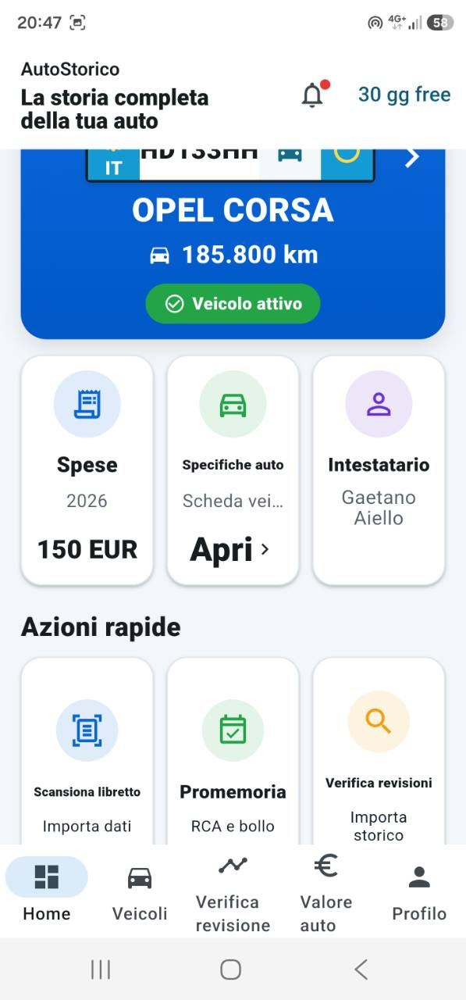
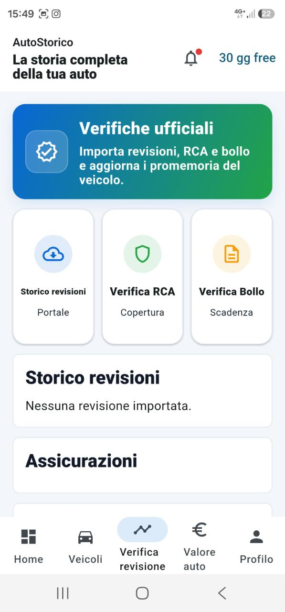
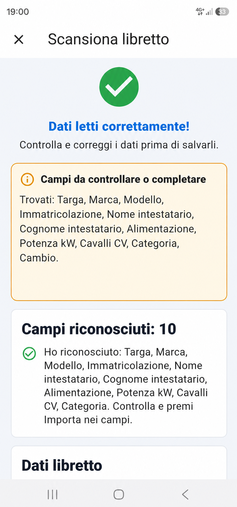

Libretto digitale
Scansiona il libretto, controlla i dati letti e completa la scheda veicolo.
L'APP PER CHI TIENE ALLA PROPRIA AUTO
AutoStorico raccoglie in un unico posto libretto, manutenzioni, chilometri, scadenze, documenti e valore del veicolo.

Un'auto non e solo una targa. E revisioni, spese, documenti, chilometri e scelte da ricordare.
Con AutoStorico ogni informazione resta al posto giusto.TUTTO QUELLO CHE SERVE
Le informazioni importanti sono sempre disponibili quando servono: a casa, in officina o durante una vendita.
Scansiona il libretto, controlla i dati letti e completa la scheda veicolo.
Revisione, RCA e bollo restano visibili: niente piu date dimenticate.
Registra manutenzioni, ricevute e chilometri per conoscere lo storico reale.
Conserva polizze, libretti e documenti utili nello stesso archivio.

VALORE E VERIFICHE
Consulta lo storico delle revisioni, registra ogni intervento e ottieni una stima del valore dell'auto basata sui dati disponibili.
PARTI DAL LIBRETTO
Inquadra il libretto. AutoStorico riconosce i dati disponibili e ti permette di verificarli prima di salvarli.
Disponibile prossimamente
Veicoli, lavori, documenti e backup sono pensati per restare disponibili a te. Le verifiche online usano solo i dati necessari al servizio richiesto.
IN ARRIVO SU GOOGLE PLAY
AutoStorico sara disponibile a breve. Inizia con 30 giorni di prova gratuita.
Google Play - prossimamente